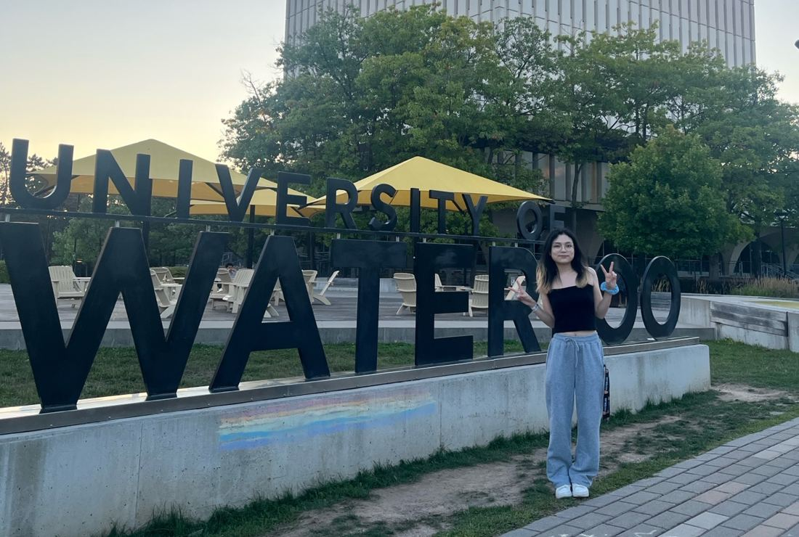
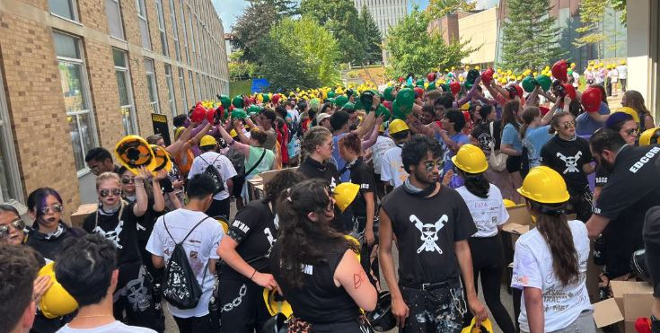
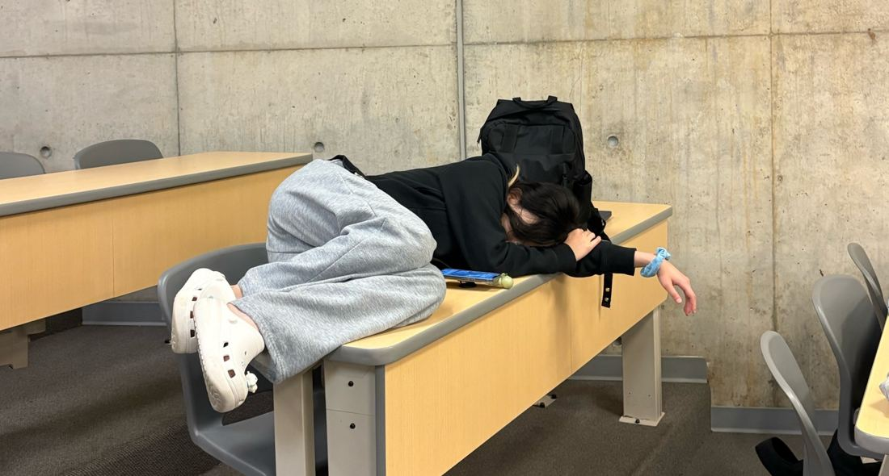
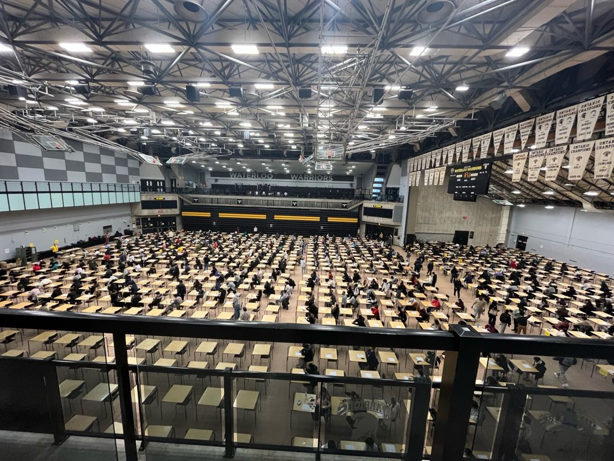
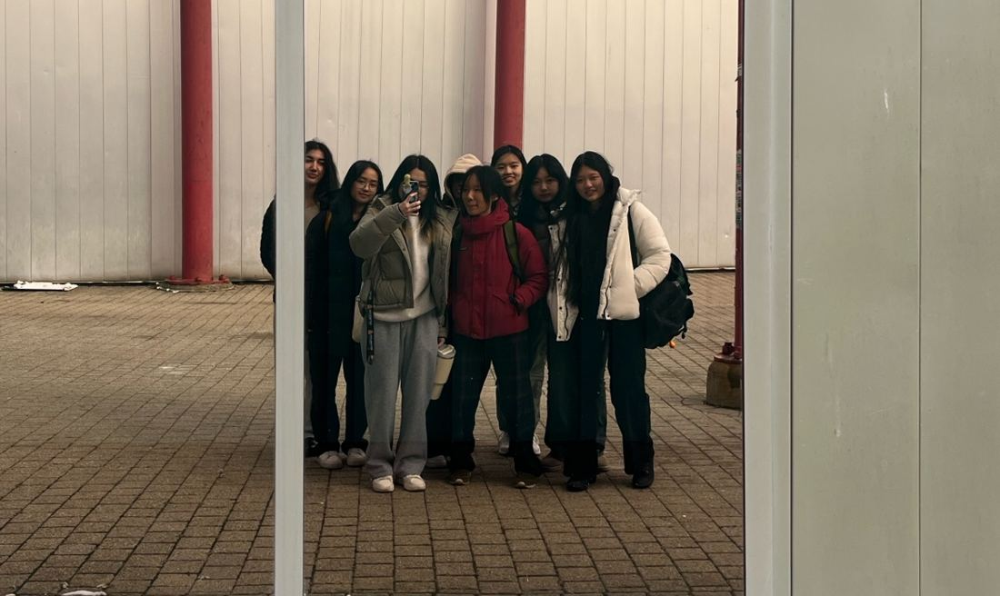
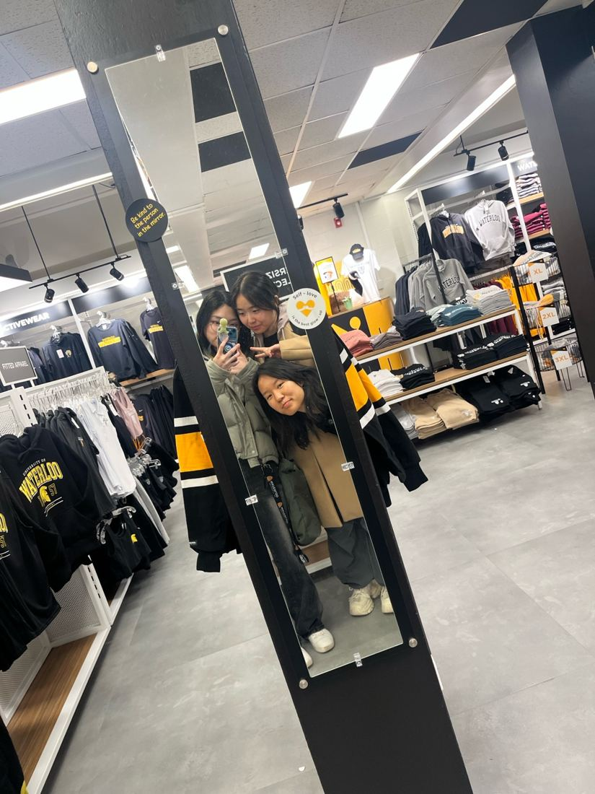

1A CE

Before it all started
Back in high school, I had always pictured myself becoming a nurse. In fact, I applied to Nursing programs across Canada and got accepted into every single program I applied to.
Yet, somehow, I ended up choosing Computer Engineering at the University of Waterloo.
Why? Honestly, I don’t know. I just felt like I needed to. Maybe it had something to do with my sister, who was already studying Computer Science at the time. Maybe I just wanted to try something different. Whatever the reason was, I made my decision, and there I was, about to start a completely different chapter of my life.
Regardless of which program I ended up choosing, I was incredibly excited to finally experience university.
I was excited to have responsibility of my own, to move out of my house and live in a dorm, to meet new people, and hopefully, to meet some lifelong friends. I think I was more excited about the university experience itself than the actual program I was entering.
And then came Orientation Week (OWeek).

Orientation Week & Dorm Life
Orientation was fun. Yes, it was incredibly hot. Yes, it was tiring. But it was also the first time I got to meet so many people from different backgrounds and programs.
You know how orientation usually goes:
“What’s your name?”
“What program are you in?”
“Let’s follow each other on Instagram!”
Except, at Waterloo, things were a little different.
It was more like:
“What’s your LinkedIn?”
And honestly, that was shocking. LOL.
I lived in Village 1 (V1) during my first year, and I’d say my dorm experience was pretty decent.
I didn’t really get the chance to bond with my floor friends as much as I would have liked. None of them were in my program, and I was usually out of my dorm studying somewhere else or just spending my day outside. I’d sometimes come back at 12 AM, occasionally even 1 AM, so naturally, I wasn’t exactly the most active floor member.
That said, everyone was really nice, and I have no complaints about the people I met there.
Now, let’s talk about the food.
The dorm food was actually pretty good. I know a lot of people hated it, but I genuinely enjoyed it at first. That is, until I realized something. The more days I spent eating in the dorm cafeterias, the more I realized the menu eventually repeated, and everything started to taste the same.
The menu changed from day to day, with different ingredients and different textures, but it was the same repeating cycle...

Academics: Welcome to Engineering
Now, onto the part everyone probably wants to hear about: academics.
During 1A, my course load consisted of seven courses:
| Course | Name |
|---|---|
| ECE 105 | Classical Mechanics |
| ECE 150 | Fundamentals of Programming |
| ECE 190 | Engineering Profession and Practice |
| ECE 198 | Project Studio |
| MATH 115 | Linear Algebra |
| MATH 117 | Calculus 1 |
| COMMST 192 | Communication in the Engineering Profession |
Let’s briefly go through each of them.
MATH 115 & MATH 117 — Linear Algebra and Calculus 1
Honestly, these two were pretty decent. I enjoyed math in high school, and I still enjoy it now. The content was relatively straightforward for me, and I didn’t find these courses particularly difficult compared to the rest of my schedule.
ECE 198 — Project Studio
This course was... something.
It was honestly pretty boring and time-consuming. However, looking back, it was also my first real experience integrating software with hardware. So while I wouldn’t say I particularly enjoyed the course, I can appreciate what it introduced me to.
ECE 190 — Engineering Profession and Practice
I’ll be honest. I thought this course was pretty dumb. LOL.
It felt like one of those courses you just had to get through. But looking back, I think having a relatively lighter course in an otherwise heavy engineering schedule wasn’t necessarily a bad thing. Sometimes you need a break.
ECE 150 — Fundamentals of Programming
Oh, this one.
ECE 150 was my introduction to C++, and it was also my first real experience with programming.
Remember how I mentioned that I originally wanted to become a nurse? Well, that meant I hadn’t really spent much time learning how to code in high school.
So coming into Computer Engineering with very little programming experience was definitely a challenge.
I struggled. A LOT.
Concepts that seemed relatively straightforward to other people sometimes took me much longer to understand. I was constantly trying to catch up, and this course quickly became one of my biggest challenges in 1A.
ECE 105 — Classical Mechanics
Otherwise known as physics.
And if there’s one thing you should know about me, it’s that I HATE physics.
I was bad at physics in high school, and apparently, university wasn’t going to change that. This course was genuinely one of my biggest struggles.
ECE 105 and ECE 150 were probably my two hardest courses throughout 1A.
COMMST 192 — Communication in the Engineering Profession
I went into this course thinking it would be relatively fun.
Well, I was wrong.
It was essentially English, essay writing, presentations, and speaking in front of people, which, honestly, was not what I had in mind when I thought about engineering.
Let’s just say it was a traumatizing experience.
Overall, if I had to rank my experience with my 1A courses, MATH 115 and MATH 117 were probably the only ones I genuinely felt comfortable with.
Everything else? A journey.

My First Reality Check
I think one of the biggest things about 1A was the transition itself.
It meant moving out of your house, living independently, managing your own schedule, doing your laundry, figuring out what to eat, and suddenly being responsible for pretty much everything.
University life was fun, but that fun came with a lot of responsibility.
And then there were the midterms.
Your first university midterm. Your first university final. Your first time experiencing an exam that carries a ridiculously large percentage of your final grade.
And, of course, your first time taking an exam at PAC.
Everything was new. Everything was exciting, but everything was also a little scary.
One thing I particularly remember was how different university felt academically compared to high school.
In high school, I was always considered one of the smarter students. I had relatively high grades, a good academic standing, and I was confident in my ability to do well academically.
Then I came to Waterloo.
Suddenly, I was surrounded by people who were just as smart, if not smarter. People who understood concepts faster, people who seemed to know exactly what they were doing, and people who made everything look so effortless.
And then came my midterms.
I genuinely failed one of my midterm exams.
That was a huge reality check for me.
I had never really experienced something like that before, and it honestly hit me pretty hard. I was already entering engineering without much motivation or a particularly strong passion for the field. Seeing my grades made things even worse.
If anything, I went from having little motivation to having negative motivation.
I was genuinely discouraged, and I think I started experiencing burnout towards the end of the term.
But somehow, I made it through.
I passed all my courses.
Were they the best grades? Absolutely not.
But did I pass?
I did.
And as we like to say, a pass is a pass.


Social Life: Is Waterloo Really That Bad?
Before coming to Waterloo, I had heard all the usual things.
Waterloo has no social life. Everyone is stressed. Everyone is studying. Everyone is going bald.
And, of course, the endless Reddit memes.
But honestly? I don’t think Waterloo’s social life was nearly as bad as people made it out to be.
Maybe I had prepared myself for the absolute worst-case scenario, but I actually found the social scene pretty lively.
Sure, there aren’t parties happening every single day. But if you know the right people, there are always opportunities to go out, hang out, and have fun.
So I wouldn’t say Waterloo has no social life. I think it really depends on the people you surround yourself with and how much effort you put into meeting others.
Personally, making friends wasn’t something I struggled with too much. I’m relatively outgoing and extroverted, so I found it pretty natural to approach people, start conversations, and find people to spend time with.
And one thing I didn’t expect?
One of the people I first started talking to during Orientation Week eventually became my best friend.
It’s funny how that works. You meet someone during those first few days, exchange the usual introductions, and have absolutely no idea how important that person might become in your life.
I’m genuinely grateful for the friendships I made during 1A, especially knowing that some of those people are still part of my everyday life.
And honestly, that ended up being one of my favourite parts of the entire experience.
A Few Things I’d Tell Incoming First Years
Looking back, here are a few things I’d tell someone who’s about to start their first year at Waterloo.
1. Don’t let Reddit scare you.
I know, I know. Incoming first years are going to spend hours scrolling through Reddit, looking for advice, opinions, and what to expect.
But please, take everything you read with a grain of salt.
Waterloo isn’t necessarily as depressing or socially dead as people make it out to be. Everyone’s experience is different, and yours doesn’t have to look like someone else’s.
2. Don’t underestimate the responsibility that comes with living independently.
Moving into residence is exciting, but remember that you’re also responsible for yourself now. Learn to manage your time, take care of your space, and make sure you’re looking after yourself.
3. Take advantage of first-year engineering tutors.
This is probably one of my biggest academic recommendations.
I know a lot of people suggest attending tutorials or visiting your professors during office hours. And while those are great resources, I personally found the First-Year Engineering Office’s tutoring resources incredibly helpful.
The tutors were genuinely nice, approachable, and willing to help. I went to them quite often, especially when I was struggling with programming and physics.
Don’t be afraid to ask for help. You don’t have to figure everything out by yourself.
4. Find your people.
University becomes so much more enjoyable when you have people to experience it with.
Whether it’s studying together, getting food, complaining about assignments, or simply walking around campus, having friends around makes a huge difference.
And don’t feel pressured to find your lifelong friends during Orientation Week. Sometimes the people who end up mattering most are the ones you least expect.
Looking Back at 1A as a Current 2A Student
If I had to describe 1A in one sentence, I’d say it was a term of excitement, adjustment, and a much-needed reality check.
I came into university excited about everything that was ahead of me. I was looking forward to independence, new friendships, new experiences, and everything that came with being a university student.
And I got all of that.
But I also experienced academic struggles, burnout, disappointment, and moments where I genuinely questioned whether I belonged in the program I had chosen.
I think that’s something people don’t talk about enough. Sometimes, the excitement of starting university slowly gets overshadowed by the reality of actually being a university student.
You realize that independence comes with responsibility, that being smart in high school doesn’t automatically mean you’ll excel in university, and that sometimes, simply getting through the term is an accomplishment in itself.
But despite everything, I wouldn’t say my 1A experience was bad.
It wasn’t perfect, and it certainly wasn’t what I had imagined in every way. But I met wonderful people, experienced things for the first time, learned more about myself, and somehow made it through one of the biggest transitions of my life.
And that’s something worth celebrating.
To all the incoming first years:
It’s okay to be scared. It’s okay to be excited. In fact, I think you should be a little bit of both.
You’re about to enter a completely new chapter of your life. There will be good days, terrible days, moments when you question everything, and moments when you realize just how lucky you are to be where you are.
Don’t put too much pressure on yourself to have everything figured out.
Enjoy the beginning. Make friends. Explore. Ask for help. And please, don’t spend your entire first year worrying about what everyone on Reddit has to say.
You’ll be okay.
And remember, a pass is a pass.